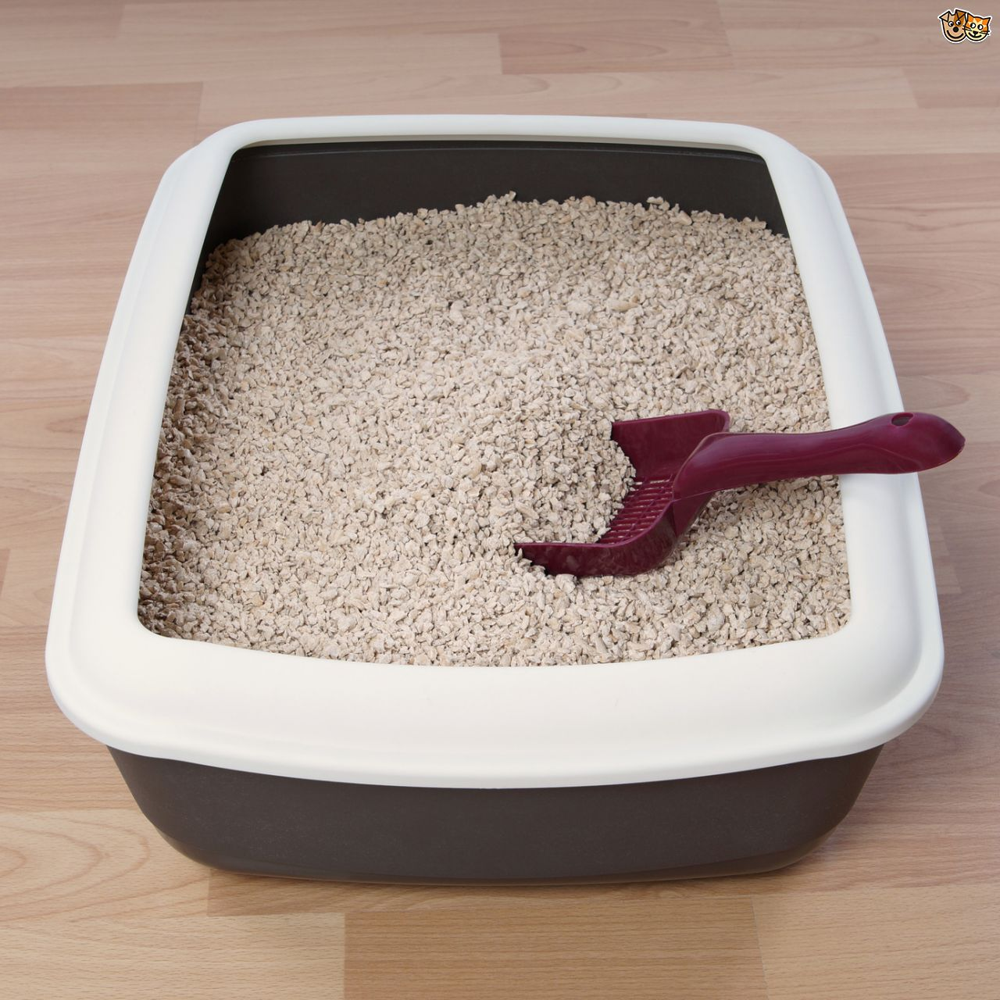
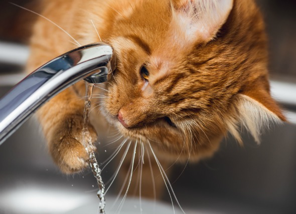

Should Your Dog’s Food Be Grain-free?Dogs with wheat, corn or barley sensitivities.
...
When to go against the grain
Dogs sometimes develop allergies or sensitivities to ingredients in their food. Your pet might be having diet troubles if they suffer some or all of these symptoms:
Itchy, flaky, bumpy red skin or Itchy, flaky, bumpy red ears or Gastrointestinal upset, including diarrhea or vomiting
What’s our gripe with grain?
Well actually, there isn’t anything bad about grain, so long as it isn’t bothering your dog. In fact, the symptoms above don’t always mean your dog has grain sensitivity—so always consult your vet before making any diet changes. However, recent research shows that dogs’ ancestors didn’t need grain, so it’s possible your modern dog doesn’t either. If you suspect your pooch is having trouble with grain, a trip to the vet is in order. They’ll evaluate your dog’s symptoms and advise whether going grain-free might help.
Remember, it can take up to 12 weeks before a dog’s symptoms respond to a diet change. During this time, avoid giving your pup treats or people food (it may contain grain) so you can get an accurate picture of whether the grain-free diet is working.
Healthy dogs can also go grain-free. Many pup parents choose to give their pets grain-free diets. Always consult your vet when making lifestyle changes for your pup, and be sure to slowly introduce new food (to avoid upset tummies).
Common grains in dog food
Wet or dry dog food can include grains such as:Wheat, Corn, Barley.Wheat is the culprit that most often leads to digestive troubles, followed by corn. (Soy, another ingredient in some foods, is not a grain but can cause similar problems.
Grain substitutes for dogs-Healthy carbohydrates can help keep dogs energetic and satisfied. Canine-friendly non-grain veggies and starches include:
White potatoes
Green peas
Chickpeas
Sweet potatoes
Carrots
Rice is a grain, but many dogs can tolerate it. Start your pup on rice slowly.
Should all dogs go grain-free?
Not necessarily. Check with your vet before switching to a grain-free diet, especially if your pet is:
Diabetic
Living with kidney issues
Overweight
Inactive
How to Safely Clean a Cat’s Litter Box
...
Cleaning the litter box. It's one of the most dreaded jobs of kitty lovers everywhere. If you're saying Urgh! over the smell of your cat's box, rest assured, he is too. Seriously, though. It's important to regularly clean your cat's litter box for two reasons: one no one wants a stinky house, and two - more importantly, no one wants a sick pet. Since the job has to get done, and you haven't been able to teach Tiki how to clean his own mess, we're here to tell you how to safely clean your cat's litter box.
It's imperative to remember that the feces and urine in your cat's box can be harmful to the person cleaning it. That's why it's important to have the right tools on hand.
Before you clean, make sure you grab a pair of rubber gloves and a mask. The mask is to reduce the risk of toxoplasmosis, a dangerous virus that can be contracted through cat feces. Another word of caution, if you're pregnant, you need to recruit another volunteer for this assignment.
You should scoop feces (or the urine that clumps together from clumping urine) from your cat's box at least once a day. You should clean your cat's litter box once a week.
Cleaning entails throwing out the old litter, scrubbing the box clean and adding fresh, new litter. If you use a liner in the litter box, pull the liner (remember our gloves, here) off of each corner and place the entire contents of the bag in a trash bag. If your cat is one of the persnickety creatures that hate litter liners, dump the entire contents of the unlined box into a trash bag. You might need to use your scooper to scrape the dried litter off the box. Open the bag wide enough for the litter to fall inside and not on the floor. A mask is key here because litter dust will begin to scatter. Make sure the trash bag is tied or sealed, and any litter on the floor is swept into the bag too.
The best place to ditch your cat's business is not in your kitchen or bathroom trashcans. It's the in the outdoor receptacle that's waiting patiently for the garbage truck on Friday.
Now it's time to clean the box. Don't be surprised to look over and find Tiki inspecting your work. He's just making sure you are in fact using soap. Using your gloves, wash the litter box inside and out with a sponge, warm water and dish detergent. Include the lid too if it has one, and the scooper. Other harsher cleaning products can be harmful to your kitty. Don't clean the box in your kitchen or bathroom sink or tub. You can use your laundry sink, or better yet, take the litter box outside and use the house bucket. After you scrub, rinse all of the soap. You can scrub repeat the rinse again process if you would like.
If the box is outside, it's okay to let it air dry or dry it with a towel. Add a new liner or just add no more than two to three inches of new litter to the unlined box.
After you put the box back in its familiar place, don't be surprised again to see the Tiki for the final inspection of your handy work.
Drinking Water: How can I encourage my cat to drink more?
...
As animals go, cats require less water than many others, and we often have a difficult time getting cats to drink as much as we'd like. Cats with certain health problems, especially kidney failure and bladder infections, need to drink more water than an average cat. To get your cat to drink more water, here are a few hints:
Increase the number of bowls of water
Place a number of water dishes for your cat around the house. You can even place the water bowls in some unusual places. Cats seem to pay more attention to things that are different. How often have we seen cats drinking water out of the Christmas tree stand or the bath tub when someone has just showered?
Vary the type of bowl
Vary the types of bowls — low ones, high ones, a drinking glass, a big dog bowl. Again, if it's unusual, cats may try it. Find bowls of different materials: crocks, stainless steel, tempered glass.
Try running water
Many cats, including one of mine, refuse to drink out of a bowl. They prefer running water. Some drink from a slowly running faucet, but you don't want to leave a faucet running all day. Luckily, there are 'fountain bowls' available which can provide your cat with running water 24 hours a day.
Flavor the water
Try adding a little water from a can of water-packed tuna to the bowl of water. This extra flavor may entice some cats to drink.
Add water to the food
Feed canned food and/or add water to the food. Canned food has a lot of moisture, so it will provide your cat with more water. If adding additional water to the food, though, we need to use some care. Some cats do not like food with added water. If your cat doesn't, you'll need to try some other options. We don't want your cat to quit eating!